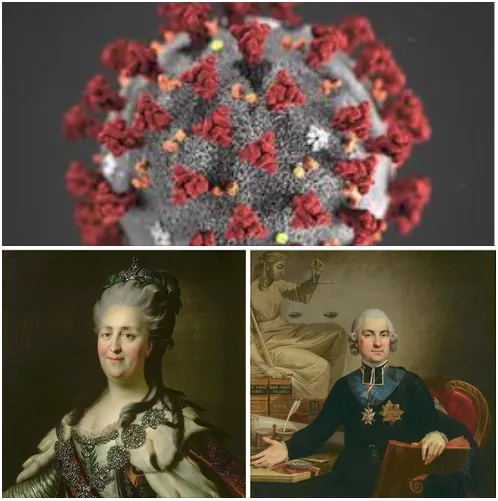

Konstytucja kontra wirusy
Mija już 3 lata, gdy wiosną 2020 roku, po e-mailach z WHO polska konstytucja straciła swą ważność na rzecz powiatowych inspektorów SANEPID-u. Zawieszono najważniejsze wolności obywatelskie i prawie nikt nie pisnął. W latach poprzednich obrońcy konstytucji rzucali się nawet pod koła samochodów na sejmowym parkingu, ale tej wiosny, wolności konstytucyjnych nie bronił prawie nikt. Mało tego, ci którzy żądali wolności osobistych gwarantowanych konstytucją po sądach ciągani są do dziś, np. za leczenie chorych, czy sprzedaż zupy w restauracji lub nawet publiczne zadawanie pytań.

Sama w sobie konstytucja nie jest ani dobra ani zła, to jest tylko nazwa aktu prawnego stojącego ponad wszystkie inne prawa. Dopiero jej zapisy mówią nam, czy jest dobra, czy nie. Konstytucja 3 maja znosiła wolną elekcję królów polskich i przywracała system dynastyczny, czyli dziedziczenie w jednej rodzinie po wsze czasy. Warto pamiętać, że dynastią tą była wskazana literalnie dynastia Wettynów, potocznie nazywanych Sasami, konkretnie wnukowi króla Augusta III, Fryderykowi Augustowi III.
Jedną z kluczowych postaci tamtych wydarzeń jest Hugo Kołłątaj, pamiętam go w PRL-owkich podręcznikach jako "Wielkiego Polaka", byłem zadziwiony, że w sowieckim ustroju ksiądz katolicki dostąpił takiego zaszczytu, szybka kwerenda dała odpowiedź. Był to działacz rewolucyjny, wyznawca krwawej rewolucji francuskiej przebrany w sukienkę katolickiego księdza. Jego głos przeważył w przyjęciu Konfederacji Targowickiej, czyli w skutkach unieważnieniu Konstytucji 3 Maja na wniosek Katarzyny Wielkiej, urodzonej jako Sophie Friederike Auguste von Anhalt-Zerbst. Skutkiem tych gwałtownych ruchów politycznych od prawa do lewa były interwencje armii rosyjskiej i kolejne rozbiory Polski.
Niestety, nasuwa się wniosek, że cywilizacyjnie byliśmy wtedy rozdarci pomiędzy rewolucyjną Francją a imperialną Rosją i mięliśmy do wyboru dżumę lub cholerę. Analogia dziś jest bardzo podobna, ale mimo braku alternatyw warto mieć orientację, kto i czym do nas celuje i nie nazywać lufy przyłożonej do skroni zimnym okładem troskliwej dłoni.
Paweł Klimczewski